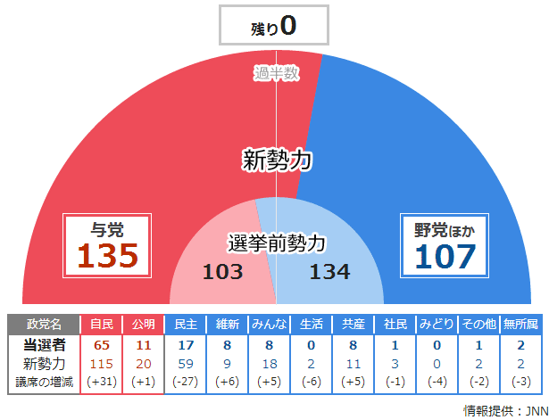

そろそろ参院選にも一言いっておくか。
公開日：

でも、これではぱに先生がちょっとかわいそうなので書くことにした。でも、この参院選についてなにか特別言いたいことはないので、ちょっと感じたことを適当に羅列していく感じにしようと思う。
基本的なスタンス
「若者が投票棄権すると高年齢層に有利 1%投票率下落で1人年13.5万円損する : J-CASTニュース」などという話もあるけれど、選挙というのは得だから行くとか、損だから行くというというモノではないと思う。
僕たちは、理念（ポリシー）を選挙で表明して初めて、“大衆（people）”から“市民（citizen）”になる。
ここで言う“市民”とは、正業・生業を持ち*1（≒自活・自立）、そのうえで民主主義の“主（King）”たるという厄介事を引き受ける存在を指す*2。その判断は、あらゆる個人的利害や、自分の置かれた環境から超越している。なぜなら、自分たちが選ぶ“主”もそのようにあるべきだと願うから。相手に公正であることを要求するなら、自分もそうあるべきではないだろうか。
たとえば、労働組合の指示に従って投票するひとたちは、“市民”ではなく“大衆”だ。創価学会の意向を汲んだ投票を行うひとたちも“大衆”と言える。
“市民”の投票は、自立・自律であらなければならない。自分のポリシーが自分の利益に背いていようと流されず、“合理的な無関心”にも染まらず（「再配分連盟」と「合理的な無関心」: 極東ブログ）、ポリシーのほうを選びとるべきだ。
まぁ、今の投票制度は“大衆”にも権利が認められている。“市民”であることを強いる制度も名目もない。だから、みんながみんな“市民”であることなど夢想にすぎないのだけれど――ただ、個人的にはそうあるべきだと信じている。
投票率が低くても何ら問題がない
さて、今回は投票率が低いことが話題になっている（http://www.asahi.com/politics/update/0721/TKY201307210015.html）。では、誰が投票に行かなかったのだろうか。
“市民”はその定義上、かならず投票に行く。
“真面目な大衆”は、投票に行くだろう。彼らの票は組織票として、彼ら自身の利害を代表する党へ流れる。
“怠惰な大衆”は、パチンコに行くか家で寝ているだろう。たとえ気が向いて投票所へ出向いても、山本太郎などのようなタレント候補に投票するのが関の山なので、家で引きこもってるほうが人畜無害でよい*3。
投票率の低下は、一般的には“怠惰な大衆”による投票行動が減ったということだろう。これにより、“真面目な大衆”のプレゼンスが相対的に増す。これは困ったことではあるけれど、一般的に信じられている「民主主義は利害を表明するための道具だ」という立場（自分は反対だが）からは、あまり問題にはならないと思う。
また、もしかしたら“真面目な大衆”そのものが減り、“怠惰な大衆”への転換がおこっているのかもしれない。労働組合の組織率は低下の一途をたどっているというし、長期的にはこの流れがあるのだろうと思うが、それはそれで結構なことかもしれない。なぜなら、絶滅危惧種たる“市民”の相対的な地位が高まる。
民主主義と教育、安全保障
義務教育は民主主義とともに生まれたが、それは国民一人一人を“民”の“主”たりうる“市民”へと育てるためだった。その意味で、教育と民主主義は車の両輪に相当する。そういう視点での教育*4が戦後あまり行われていなかったのはたぶん事実で、そのツケが今、現在の政治参加の少なさ、自らの利得を実現することだけを狙った歪んだ政治参加として現れている。
さて、民主主義（厳密には共和主義か）には実はもうひとつ“輪”があって、それが市民武装論だったり国民皆兵制度だったりするのだけれど、日本ではガチ保守が若者の性根を叩きなおす道具として言及するのみで、あまり語られていないようだ。
自由な国家とは自立した国家だ。経済面・文化面のみならず、軍事面でも自立して初めて自由な国家といえる。日本が自由な国家を目指すならば、今のところは武装自立（困難な現実論）か非武装中立（理想論）が選択肢としてあげられている。もちろん、従来の米国依存を続けるという選択肢（安全な現実論）もあるが、憲法を変えるというのならば、どれを選択すべきか国民も政党も腹をくくって立場を明確にすべきではないかなぁ、と感じる（日本の外交について素人なりに考えてみた - だるろぐ）。
遠のく二大政党制
民主党の敗北、第三極の不振により、二大政党制は遠のいた。橋下氏が野党勢力の糾合を企んでいるようだけれど、所詮烏合の衆、“第二の民主党＜選挙互助会＞”を生むだけの話だと思う。
あと、二大政党制ってそんなにいいものだろうか。
アメリカでは共和党支持層と民主党支持層はほぼ拮抗していて、そのどちらでもない日和見主義な数％のひとたちがキャスティングボートを握っているという。また、アメリカには連邦主義と半連邦主義、自由貿易と再配分重視という意見の対立が歴史的に成立している。
日本はどちらかと言うと、欧州的な連立政権のスタイルのほうが向いているように思う。民意をたった2つに整理するのは不可能だし、政策分野によって柔軟に手を結んだり、離れたりすればいいじゃないか。どちらにしろ、どの党もほかと差別化しうる明確なポリシーを確立すべき（一般意志のピエロ――選挙前だしひとこと言っておくか - だるろぐ）だし、因縁や好悪に囚われない冷静な対応が求められるのだけど。
二院制について
さて、ねじれが解消し、ブレーキが外れた自民党政権。あと数年はこの状態で安定しそうだけれど、逆に問題となるのはその“暴走”（野党の表現を拝借した）をどうやって止めるかだろう。もし止められないのならば、二院制の意義が問われてもよい。
あと、今回は民意と選挙結果の乖離についてあまり問題になっていないようだが、この件については過去にも少し論じた。
結論を言えば、全国レベルの完全比例代表制をとり個人の合計意志を代表させる衆議院（一票の格差の完全解消、“代表”を行う）と、道州・都道府県から選挙によらず有識者を送り出す参議院（地方の意見を“討議”に役立てる）に再編すべきだと思う。
*1:オレから言わせたら、プロ市民は市民ではない
*2:厄介事については https://blog.daruyanagi.jp/entry/2013/07/20/034801 の後半を参照
*3:投票率のみを問題にすると、彼らを起こすだけの結果になるのでむしろよくないと思う
*4:この面での先進国は、やはりフランスだと思う